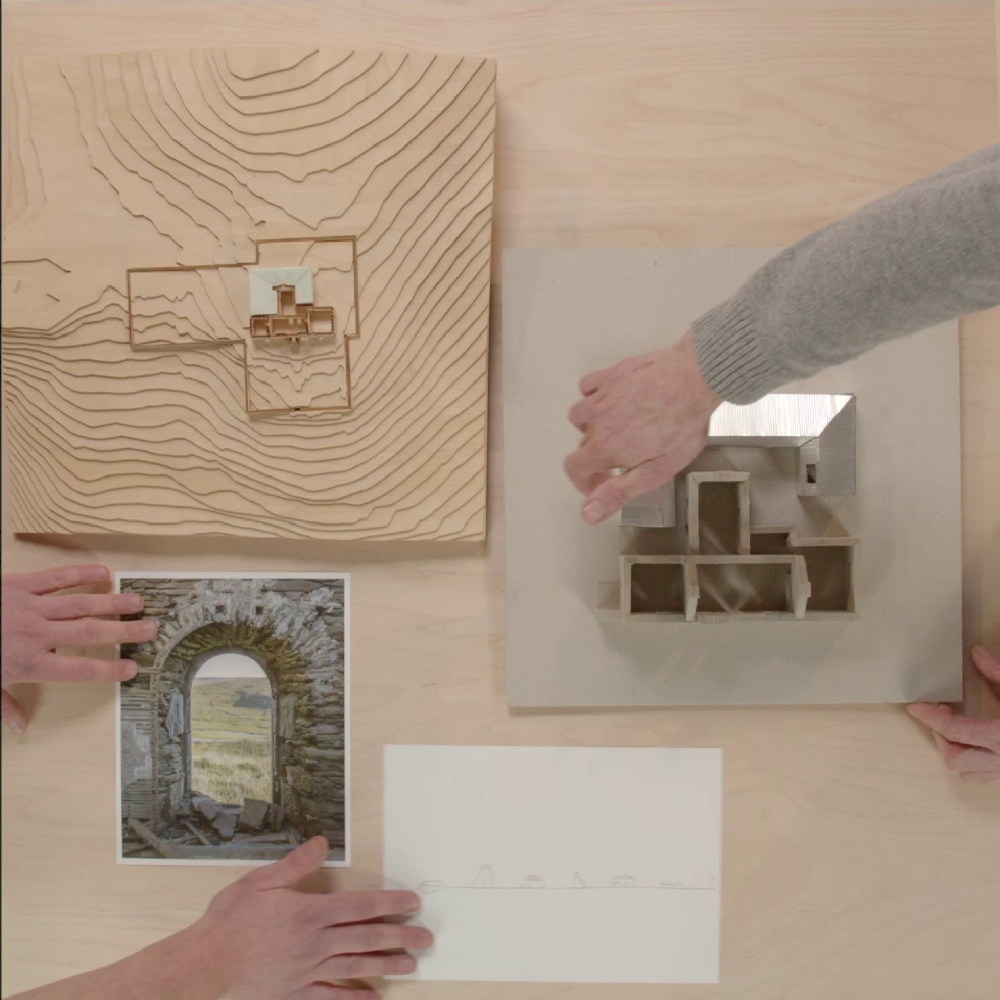

Exploring NU architectuuratelier

Hoe ontstaat een architectuurpraktijk? Welke ideeën, ontmoetingen en toevalligheden bepalen de richting die een bureau uitgaat? In Exploring NU architectuuratelier blikken architecten Halewijn Lievens en Armand Eeckels terug op de ontwikkeling van hun bureau. De film is volledig van bovenaf gefilmd, met een houten tafel als centraal decor. Terwijl de twee architecten vrijuit vertellen, leggen ze voortdurend foto's, tekeningen, maquettes en objecten op tafel. Zo ontstaat een bijzonder visueel gesprek waarin het ene beeld aanleiding geeft tot het volgende verhaal.
Aan de hand van projecten en persoonlijke fascinaties verkennen Lievens en Eeckels de inspiratiebronnen achter hun werk. Ze vertellen over hun belangstelling voor materialen en constructies, over de wisselwerking tussen architectuur en landschap en over de invloed van kunstenaars, ontwerpers en andere architecten. De voorwerpen op tafel brengen het gesprek telkens in een nieuwe richting. Niet een chronologisch overzicht, maar een opeenvolging van associaties maakt duidelijk hoe experiment, intuïtie en een onderzoekende houding hun architectuurpraktijk vormgeven.
De film werd speciaal gemaakt voor de tentoonstelling Play. NU architectuuratelier, die van 18 oktober 2023 tot 28 januari 2024 plaatsvond in Bozar in Brussel. Het uitgebreide gesprek vormde ook de basis voor de gelijknamige monografie, uitgegeven door A+ Architecture in Belgium en Bozar in samenwerking met Verlag Walther & Franz König. Zo groeide één opname uit tot twee verschillende portretten van een architectuurbureau dat het ontwerpproces als een voortdurende ontdekkingstocht beschouwt.